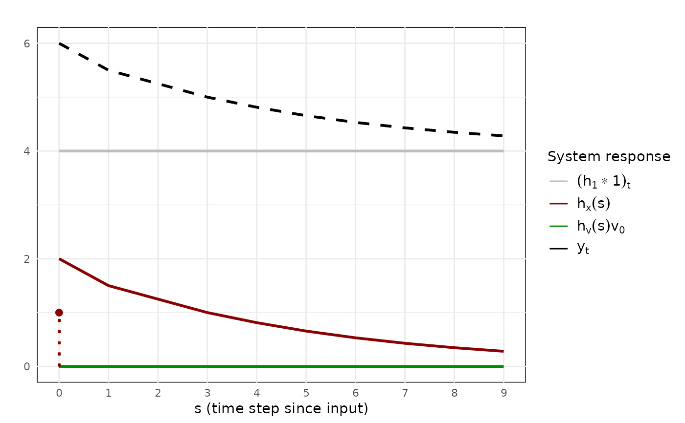

Plots the system responses based on the provided input. This input
should be the output of the irf_generator() or the irf_empirical() functions.
Usage
irf_plot(
data,
cols = NULL,
title = NULL,
xlabel = NULL,
ylabel = NULL,
title.size = ggplot2::rel(1),
title.hjust = 0.5,
label.size = ggplot2::rel(1),
axis.text.size = ggplot2::rel(0.75),
legend.title.size = ggplot2::rel(1),
legend.text.size = ggplot2::rel(1),
x.color = "red4",
x.linetype = "solid",
x.linewidth = 1,
x.label = NULL,
v.color = "green4",
v.linetype = "solid",
v.linewidth = 1,
v.label = NULL,
irf.color = "black",
irf.linetype = "dashed",
irf.linewidth = 1,
irf.label = "y[t]",
intercept.color = "gray",
intercept.linetype = "solid",
intercept.linewidth = 1,
intercept.label = NULL,
impulse.size = 2,
impulse.shape = 19,
impulse.x.shape = impulse.shape,
impulse.v.shape = impulse.shape,
impulse.linetype = "dotted",
impulse.x.linetype = impulse.linetype,
impulse.v.linetype = impulse.linetype,
impulse.linewidth = 1,
impulse.alpha = 0.95,
legend = TRUE,
legend.title = NULL,
legend.position = "right",
background.fill = "white",
confidence_interval = TRUE,
interval.alpha = 0.2,
breaks = 10,
estimated = FALSE
)Arguments
- data
Output of the
irf_generator()orirf_empirical()function.- cols
Character vector denoting the impulse responses you would like to plot. The values in this vector should be columns in
dataand are thus typically limited to"irf","irf_x","irf_v", or"irf_intercept", or any combination of those. Defaults to all impulse responses.- title
Character denoting the title of the plot. Defaults to
NULL, that is no title.- xlabel
Character denoting the label of the x-axis. Defaults to
"s (time since input)"for a single input and to"t (time)"for multiple inputs.- ylabel
Character denoting the label of the y-axis. Defaults to
NULL, that is no such label.- title.size
Integer denoting the size of the title. Defaults to a relative size of
1as defined by theggplot2::rel()function.- title.hjust
Numeric denoting the justification of the title. Defaults to
0.5, or centered justification- label.size
Integer denoting the size of the axis labels. Defaults to a relative size of
1as defined by theggplot2::rel()function.- axis.text.size
Integer denoting the size of the axis text. Defaults to a relative size of
0.75as defined by theggplot2::rel()function.- legend.title.size
Integer denoting the size of the legend title. Defaults to a relative size of
1.25as defined by therelfunction.- legend.text.size
Integer denoting the size of the legend text. Defaults to a relative size of
1as defined by therelfunction- irf.color, x.color, v.color, intercept.color
Character denoting the colors to use to visualize the total response (
irf.), the response to impulses of the variable x (x.), the response to the innovations (v.), and the intercept responses (intercept.) respectively. Defaults are"black","red4","green4", and"gray"respectively.- irf.linetype, x.linetype, v.linetype, intercept.linetype
Character denoting the linetype to use to visualize the total response (
irf.), the response to impulses of the variable x (x.), the response to the innovations (v.), and the intercept responses (intercept.) respectively. Defaults are"dashed","solid","solid", and"solid"respectively- irf.linewidth, x.linewidth, v.linewidth, intercept.linewidth
Numeric denoting the linewidth to use to visualize the total response (
irf.), the response to impulses of the variable x (x.), the response to the innovations (v.), and the intercept responses (intercept.) respectively. Defaults to1for all variables- irf.label, x.label, v.label, intercept.label
Character denoting the legend label to give to the the total response (
irf.), the response to impulses of the variable x (x.), the response to the innovations (v.), and the intercept responses (intercept.) respectively. Defaults to the mathematical labels for each specific part- impulse.size
Numeric denoting the size of the point that indicates an impulse has been given. Defaults to
2.- impulse.shape, impulse.x.shape, impulse.v.shape
Integer or character denoting the shape of the point that indicates an impulse has been given. You can give impulses of variable x (
.x.) and impulses of the innovations (.v.) different shapes if desired. Defaults to19.- impulse.linetype, impulse.x.linetype, impulse.v.linetype
Character denoting the linetype of the line connecting the impulses to a given time on the x-axis. You can give impulses of variable x (
.x.) and impulses of the innovations (.v.) different linetypes if desired. Defaults to"dotted".- impulse.linewidth
Numeric denoting the linewidth of the line connecting the impulses to a given time on the x-axis. Defaults to
1.- impulse.alpha
Numeric denoting the opacity of the impulses (point and line). Defaults to
0.95.- legend
Logical denoting whether a legend should be printed. Defaults to
TRUE,- legend.title
Character denoting the title of the legend. Ignored if
legend = FALSE. Defaults to"Impulse response"for a single input and to"Cumulative responses"for multiple inputs.- legend.position
Character denoting the position of the legend. Ignored if
legend = FALSE. Defaults to"right".- background.fill
Character denoting the color of the background of the plot. Defaults to
"white".- confidence_interval
Logical denoting whether to plot the confidence interval when available in the
data. Defaults toTRUE.- interval.alpha
Numeric between
0and1denoting the opacity of the confidence interval. Defaults to0.20.- breaks
Integer denoting the number of breaks to allow in the time-axis. Defaults to
10.- estimated
Logical denoting whether the provided
dataare system responses estimated through data. WhenTRUE, it will change the labels of the decomposed responses to denote their estimated nature. Defaults toTRUEwhendatacontains information on the innovation type, an internal column only created when estimating system responses based on data. Otherwise defaults toFALSE.
Examples
# Create an impulse response function
output <- irf_generator(
intercept = 1,
ar_params = c(0.5, 0.25),
x_params = c(2, 0.5),
x = c(1, rep(0, 9))
)
# Plot its results
irf_plot(output$irf)
